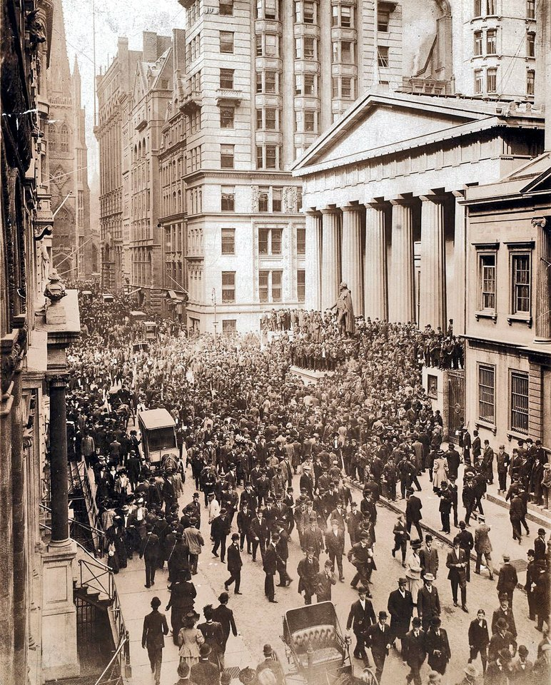

FILE FCP-03 HISTORICAL CASE FILE
The Panic of 1907 and private financial rescue
ASSESSMENT: Private rescue power and systemic fragility are established; deliberate manufacture of the panic is not.
Documented findings, economic interpretation and unresolved claims are assessed separately.

Claim under review
The question is whether a small group of financiers deliberately caused a panic to centralize U.S. monetary power and force creation of a central bank.
The United Copper corner failed before the Knickerbocker run, but the panic spread through trust companies that held fewer reserves and had weaker access to clearinghouse support than national banks. That institutional difference is testable in balance sheets and withdrawal data.
Context and timeline
A failed United Copper corner in October 1907 preceded runs on Knickerbocker Trust and other New York institutions. J. P. Morgan organized support with other financiers and Treasury deposits; Congress later established the National Monetary Commission.
Morgan’s rescue role was concentrated in New York and dependent on private coordination because no Federal Reserve lender existed. The National Monetary Commission followed the panic and informed reform debates; later central-bank creation does not establish that rescuers intended the original failure.
Primary records and formal findings
The commission documented fragmented reserves, clearinghouse responses and the absence of a public lender of last resort; it did not find Morgan caused the original failure.
Assess the causal chain from the corner to withdrawals using dated news, depositor runs and correspondent links. An engineered-panic theory needs direct evidence of planning and benefit, not merely influence over rescue decisions.
Independent economic evidence
Moen and Tallman’s bank and trust-company data show how contagion spread differently across institutions; Bruner and Carr trace the speculative trigger.
The sequence supports a speculative trigger followed by institutional contagion and private rescue. A claim that rescuers arranged the trigger needs direct contemporaneous evidence, not just their subsequent influence.
Counter-evidence and limitations
Reform followed a crisis, but sequence alone does not prove orchestration. Reserve fragility and information failures explain contagion without a nationwide plot; the later Federal Reserve arose through public debate and legislation.
Falsifiable checks and assessment
Examine dated correspondence, share trades and trust-company liquidity before the run; identify whether alleged organizers profited from a crisis they could demonstrably trigger.
Assessment: Private rescue power and systemic fragility are established; deliberate manufacture of the panic is not.
Sources and evidentiary notes
- National Monetary Commission investigations (1909–1911)Official studies document reserve fragmentation and reform debate, not deliberate panic creation.
- James R. Wicker, “The Banking Panic of 1907,” Journal of Economic History (1975)Academic reconstruction analyzes chronology and trust-company runs. This work tests an economic interpretation; its estimates depend on data and assumptions and do not establish intent.
- Robert F. Bruner and Sean D. Carr, The Panic of 1907 (2007)Financial history traces the United Copper episode and rescue, rather than proving conspiracy.
Historical research only; not investment or legal advice.